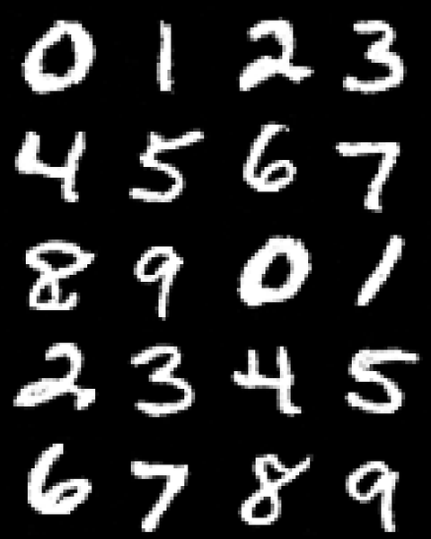

Project 3
Part A plays with a pretrained flow model. Part B trains one from scratch on MNIST.
Part A
Exploring the Power of Flow Models
Denoising, editing and illusions with PixNerd. Hover to flip the elephant.

Part B
Flow Matching from Scratch
A UNet trained on MNIST that turns noise into digits.